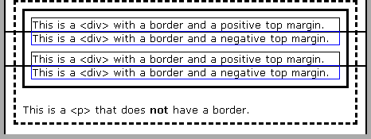

Written by Jonathan McLean
What Is Border Chaos?
This is an IE6-only bug that occurs when the following conditions are met:
- There are two consecutive block-level boxes;
- The second one has a negative top margin; and
- There is at least one border on the second box or its ancestors.
Perhaps not the most common situation — we don’t often use negative margins for consecutive flowed boxes — but IE renders all the borders around the second box in odd locations (and seems to omit some entirely), which is just wrong. There is a demo on another page. For those people without IE/Win, some screenshots follow.
Screenshots
The demo should be rendered like this (screenshot from Firefox 0.8):
This seems pretty simple — how hard can it be to draw a few lines? Unfortunately, IE 6.0/Win doesn't like it at all. It draws parts of the surrounding borders all over the place, even eliminating bits here and there:
The Code
The code used in the demo is as follows:
<div class="demo-outer">
<div class="demo-inner">
<div class="demo1">
This is a <div> with a border and a positive top margin.
</div>
<div class="demo2">
This is a <div> with a border and a negative top margin.
</div>
<div class="demo1">
This is a <div> with a border and a positive top margin.
</div>
<div class="demo2">
This is a <div> with a border and a negative top margin.
</div>
</div>
<p>This is a <p> that does <strong>not</strong> have a border.</p>
</div>
.demo-outer {
border: 3px dashed black;
padding: 8px;
}
.demo-inner {
border: 3px solid black;
padding: 0 8px 8px 8px;
}
.demo1 {
border: 1px solid black;
margin-top: 8px;
}
.demo2 {
border: 1px solid blue;
margin-top: -1px;
}
.demo-outer p {
margin-bottom: 0;
}
These boxes are also enclosed by div#global-wrapper, which has a two-pixel border. If you check the screenshot,
you will notice a pair of two-pixel horizontal lines going across the page — these are from div#global-wrapper.
Workarounds
So, what can we do about this? We don’t want our documents to look quite like that. I have found a few ways to avoid the problem:
-
Don’t Do It!
In some cases, it is possible to avoid the problem outright. In this instance, I could achieve the intended behavior quite easily through other means — I could just remove the border from the first box and get rid of the negative margin. This is clear and simple, and doesn’t trigger other pesky bugs.
-
Relative Positioning
Setting
position: relative;on the offending box or its ancestors solves the problem — but only for that box and its descendants. Any ancestors with borders will still be messed up. In other words, if I were to putposition: relative;on.demo-outer(the one with the dashed border), then IE would render it like this:So, while the borders on
div.demo-outerand its descendants are rendered correctly, the border ondiv#global-wrapperis still rendered in the same manner as before. Puttingposition: relative;ondiv#global-wrapperwould get rid of the problem utterly, but doing so on the demo page has the unfortunate side-effect of making the page header disappear for some reason (sigh).In this case, I could also get rid of the negative margin and use relative positioning to move the second box up by one pixel. This is not a general-case solution since it leaves an gap underneath the second box.
-
The Zoom Fix
This IE6 bug may be fixed by applying the Zoom Fix. The difficulty is identifying exactly which boxes need the hack, and I think it might vary depending on the context. I experimented with the demo, and I found that the bug may be fixed in this case by applying the Zoom Fix to
.demo2and.demo-inner(i.e., the negatively margined boxes and the box with a three-pixel, solid, black border). BTW, applying the Zoom Fix to different combinations of boxes produces interesting results.
Conclusion
There's not much to conclude here — it’s a bug and it’s potentially annoying, but it can be avoided or fixed. This isn’t IE6's most spectacular bug, but it serves as yet another warning of the many problems found in IE. Authors beware.